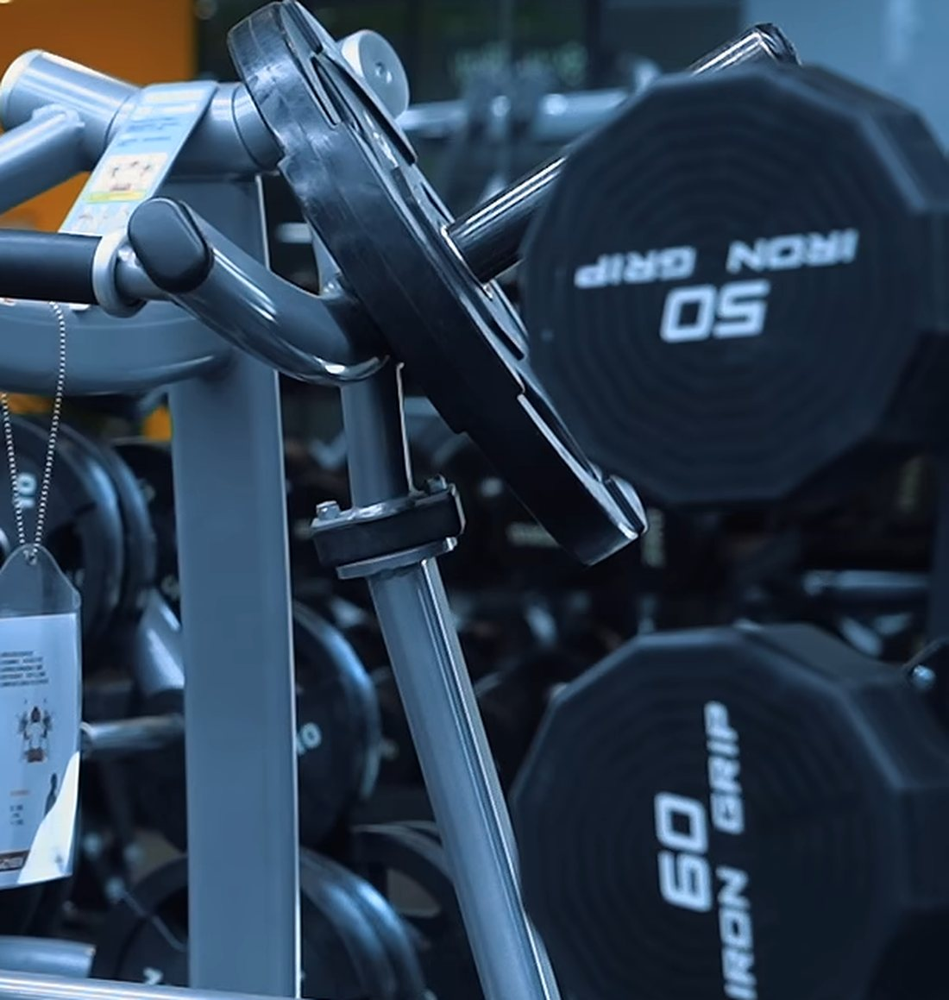
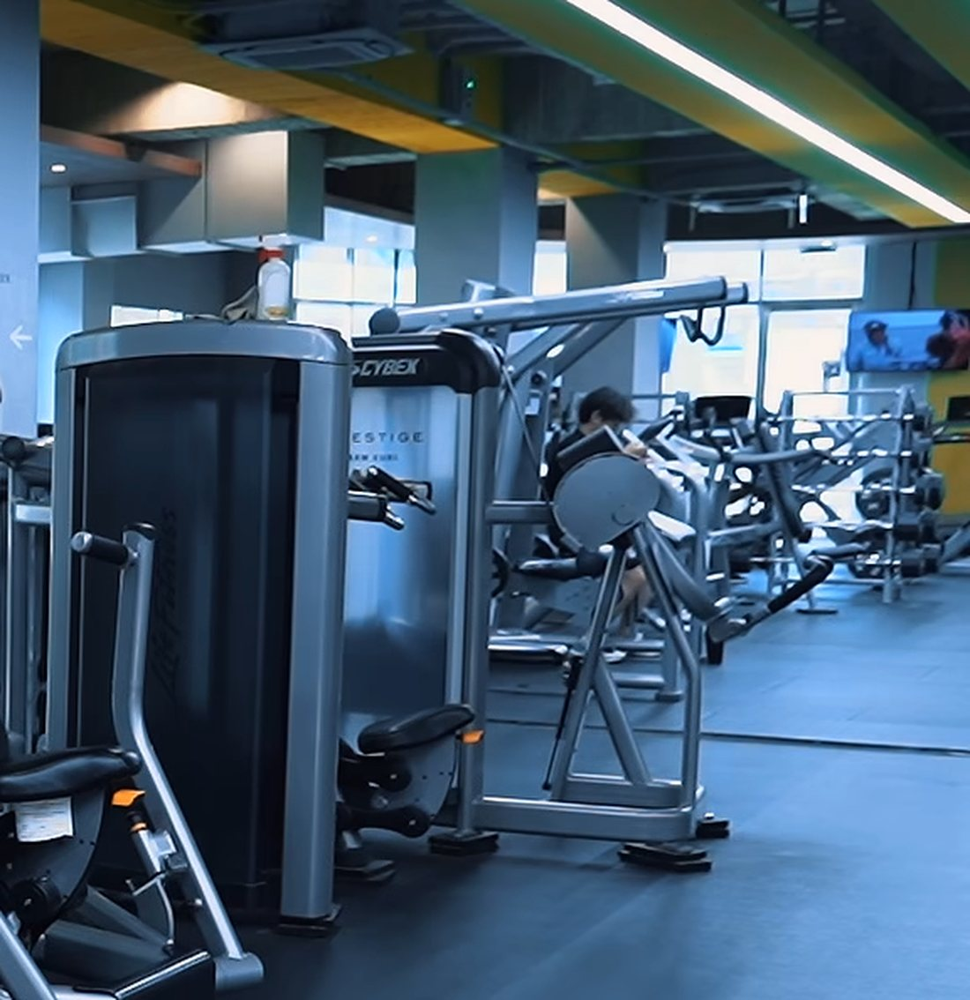
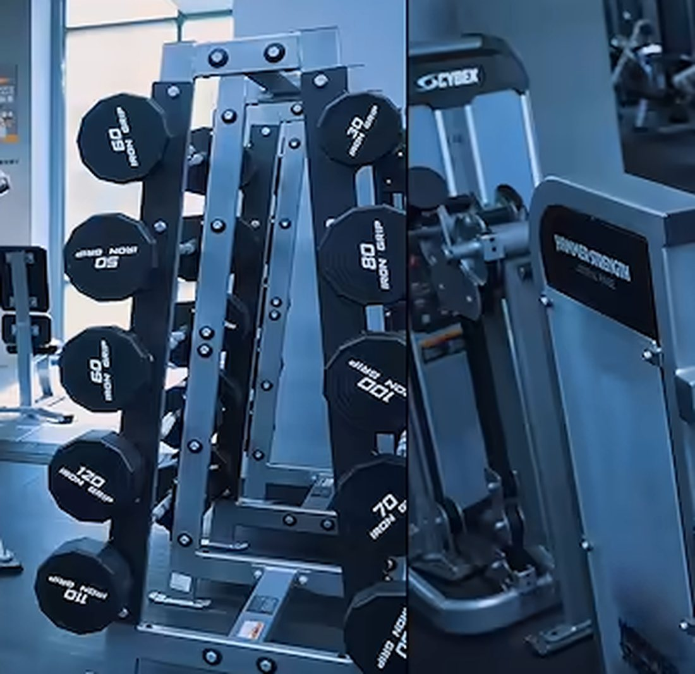
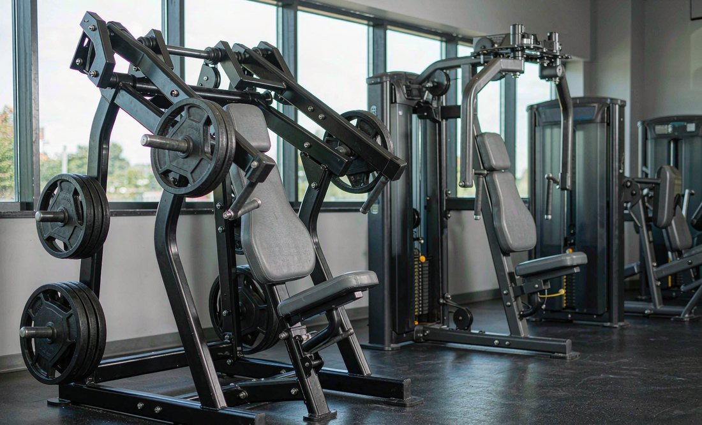
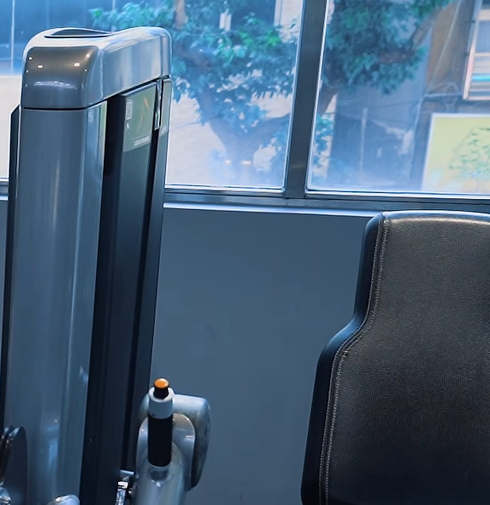
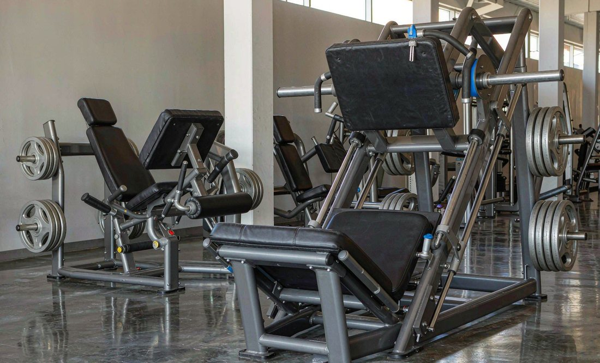
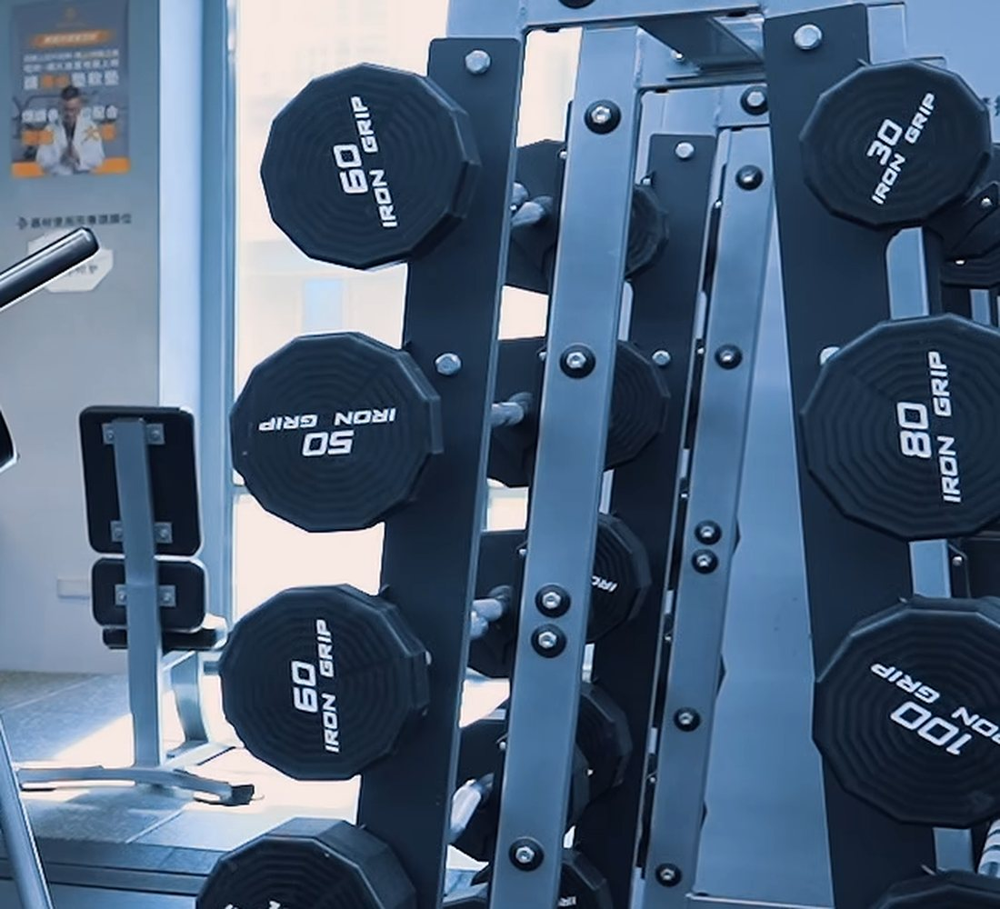
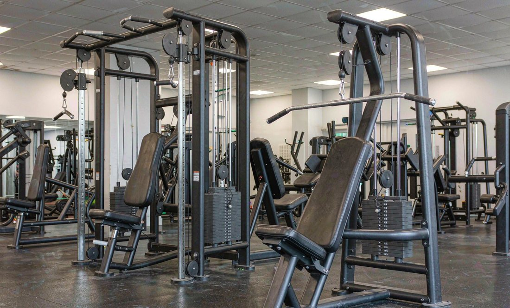

视频把健身房新手的全套安排压成一张表：4 天、13 个器械动作、每个动作 12 次 3 组。下面按训练日拆成可照做的步骤，重量全部是视频里作者自己的示范值。

适合谁：刚进健身房、不想一次记太多动作的人。视频说每次花一小时，专注做好 3–4 个动作，熟悉后再加自由重量00:16:1800:16:2000:16:24。
不适合谁：想照搬重量的人。作者说 13 个动作只是通用框架，训练重量会随进步逐步增加，片中数字仅供参照00:00:1700:00:2100:00:57。
视频里没说：训练总年限、身高体重、具体伤病处理，也没有给每个动作的热身组重量。文中所有数字均来自字幕口播。
健康提示：本文是非医疗建议的信息整理，不替代诊断或治疗。有疼痛、伤病或慢性疾病，请先咨询医生或专业教练。
四天分别是：胸 / 腿 / 肩 / 背00:00:2600:00:29。先把这张表截图，每次训练后记录重量，看强度有没有进步00:00:4600:00:50。
| 训练日 | 动作顺序 | 视频给出的示范重量 |
|---|---|---|
| 第 1 天 · 胸 | 推胸 → 蝴蝶机夹胸 → 反向飞鸟 → 弯举00:00:31 | 72.5 / 65 / 31.5 / 31.5 kg00:02:0300:02:5300:04:4800:05:37 |
| 第 2 天 · 腿 | 腿举 → 腿弯举 → 腿屈伸00:00:34 | 140 / 42.5 / 72.5 kg00:07:5400:08:3000:09:08 |
| 第 3 天 · 肩 | 肩推 → 器械侧平举 → 绳索下压00:00:38 | 50 kg 每侧 / 32 / 20 kg00:11:2200:12:1500:12:51 |
| 第 4 天 · 背 | 宽握下拉 → 窄握下拉 → 坐姿划船00:00:42 | 63 / 56 / 49 kg00:14:1300:14:4600:15:35 |

每个动作开始前都先调座椅、调把手、用小重量热身，别坐下就推00:01:2300:01:29。视频后面明确说，这些调整每个动作都要做，不再逐一重复00:02:4600:02:50。
| 要决定的事 | 视频里的说法 | 照着做 |
|---|---|---|
| 推胸机还是史密斯 | 坐姿推胸机好上手、容错高；视频示范坐姿机00:01:1400:01:19 | 新手先用坐姿推胸机，熟悉后再换史密斯 |
| 反向飞鸟放哪天 | 肩后束放在胸日，因为背日动作也用到后束，避免影响背日质量00:03:2300:03:31 | 夹胸后直接用同一台机器练后束00:03:36 |
| 腿举还是哈克深蹲 | 作者更推荐哈克深蹲，但视频示范最常见、好用的腿举机00:07:0100:07:04 | 按健身房现有器械选，不为了机器换计划 |
| 腿弯举坐式还是俯式 | 作者推荐俯式，因为身体更稳定、更容易感受腘绳肌00:08:1200:08:18 | 优先俯式，做不到完整幅度就降重量00:08:40 |
| 腿举脚放在哪 | 脚放高更偏臀和腘绳肌，放低更偏股四头肌，站距宽更多内收肌00:07:1400:07:20 | 先找舒服位置，膝盖对准脚尖方向00:07:2500:07:33 |
| 划船握宽还是握窄 | 视频建议先用较轻重量和宽握，刺激上背、斜方肌与菱形肌00:15:1900:15:23 | 从宽握轻重量起步，再加窄握变化 |

坐姿推胸：先调座椅高度和动作幅度，轻重量热身，检查 seat 是否太低导致耸肩、手肘是否外张太多00:01:2600:01:3900:01:41。作者做 72.5 kg × 12 次 × 3 组，组间 90 秒，慢推、停、慢放，不到底00:02:0300:02:0800:02:11。
肩胛处理要看目标：视频说增肌训练只要肩膀下沉放松；举重训练才需要收肩胛并微弓背借力00:01:4300:01:58。
蝴蝶机夹胸：调座椅和把手后中等重量热身，做 65 kg × 12 × 3，慢夹、停、慢放，目标是胸大肌内侧感觉00:02:3200:02:5300:03:02。
反向飞鸟：轻重量热身，关键是不要刻意收肩胛，保持前伸位，在约 160° 的范围内外展00:03:4700:04:2700:04:29。作者用 31.5 kg × 12 × 3，别为了重量借背发力00:04:4800:04:55。
弯举机：先摆好手臂位置再热身，做 31.5 kg × 12 × 3。如果向心阶段身体离开靠垫、靠惯性拉起，就说明太重00:05:2500:05:3700:05:44。

腿举：脚位决定重点——高偏臀腿后侧、低偏股四头肌、宽偏内收肌00:07:1400:07:20。到底时膝盖略低于脚尖，脚微外八，膝盖跟脚尖同向00:07:2900:07:33。
两个硬性检查：下背部要贴垫，太重导致弓背会压到脊柱；蹬起时膝盖不要完全锁死，留一点弯度保持张力00:07:3900:07:4700:07:51。作者做 140 kg × 12 × 3，推起慢呼气、下放深吸气00:07:5400:08:03。

俯式腿弯举：做 42.5 kg × 12 × 3，滚垫碰到大腿后侧再慢慢放回，动作全程走完幅度，做不到就降重量00:08:3000:08:2500:08:40。
腿屈伸：练大腿前侧。作者提醒这台机器对膝盖压力较大，别上太重，保持慢起、停、慢放；他做 72.5 kg × 12 × 300:08:5600:09:0400:09:08。

坐姿肩推：调好座椅后，最低点手肘略低于肩；把手太低会让推起角度别扭、增加肩关节压力00:10:4100:10:43。推起时收腹、慢呼气，背贴座椅，手肘略向前，顶点不锁死00:10:4700:11:0600:11:10。作者每侧 50 kg × 12 × 300:11:22。
器械侧平举：垫子落在大臂靠近手肘处。视频说要略微前倾，手肘向前向外走弧线，不是直上直下；检查有没有耸肩代偿00:11:4100:11:4900:11:5200:11:58。用 32 kg × 12 × 3，别爆发推00:12:1500:12:07。
绳索下压：用 V 绳，把手高度约与肩同高。身体不摆动，只有手肘做轴，大臂夹紧，绳子尽量与钢索平行00:12:2400:12:3500:12:40。用 20 kg × 12 × 300:12:51。

宽握高位下拉：握距约为肩宽 1.5 倍，掌心向前，腿卡进垫下00:13:1500:13:20。拉到上胸或锁骨位置，肩胛自然下沉后向内夹，身体可微微后仰但不要晃00:13:2600:13:3200:13:35。作者 63 kg × 12 × 3，回放时不完全伸直手臂，保持背部张力00:14:1300:14:04。
窄握反手下拉：握距略窄于肩，挺胸、背部自然弧度，避免耸肩或用胳膊硬拉00:14:2600:14:3100:14:36。用 56 kg × 12 × 3，慢拉、停、慢放，不借惯性弹00:14:4600:14:55。
坐姿划船：脚踩踏板、膝微弯，下背挺直、胸口打开00:15:0600:15:08。回放时不要彻底放松、身体前倾借力重启；作者 49 kg × 12 × 300:15:2900:15:35。

四天结束后，作者把这套计划定义为「新手友好的全身训练」：4 天、13 个动作，重心是先把动作模式练对00:15:4100:15:4600:15:49。
统一参数是 12 次 3 组、休息 90 秒、慢—停—慢放，但视频说这不是死规矩：动作模式稳定后再加入大重量低次数或高次数耐力组00:15:5500:16:0100:16:07。
恢复方面，视频说要保证每天蛋白质摄入，帮助肌肉修复；后面整段是蛋白粉赞助口播，本文不把它当训练原则00:09:1800:09:31。
对新手，作者明确建议别把强度推太高：动作更标准、神经募集更好、肌肉感觉更清楚，都算进步；每次练完还期待下一次，比练到废掉更重要00:06:2200:06:2900:06:3300:06:35。
| 坑 | 怎么避 |
|---|---|
| 坐下就推 | 先调座椅和幅度，轻重量热身并检查姿势00:01:2300:01:37 |
| 推胸时耸肩、手肘外张 | 座椅别太低，肩膀下沉放松00:01:3900:01:41 |
| 反向飞鸟刻意收肩胛 | 保持前伸位，在约 160° 内做，别让斜方肌接管00:03:4700:04:29 |
| 腿举锁死膝盖或弓背 | 下背贴垫、膝盖留微弯00:07:3900:07:47 |
| 腿屈伸上大重量 | 对膝盖压力较大，稳节奏优先00:08:5600:08:58 |
| 侧平举耸肩、直上直下 | 前倾、走弧线，感受重量压在肩上00:11:4700:11:52 |
| 下拉与划船借身体甩 | 控制慢放，不弹、不彻底卸力00:13:5600:15:29 |
视频说 21% 折扣、限量 300 组 的蛋白粉组合是「比官网便宜」00:09:5100:09:52。这是赞助口播，价格与效果未经核实，本文不推荐购买。
作者说肩是「性价比最高」的肌群，练宽能让腰和头显小00:10:1200:10:21。这是审美判断，不是可核验的结论。
表中重量是作者本人示范值，视频只说「仅供参考」00:00:57。不要把它当自己的目标重量；有疼痛或伤病请按医生或教练建议调整。